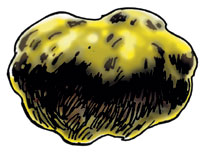
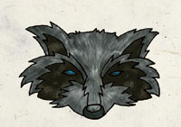
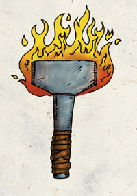
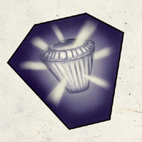
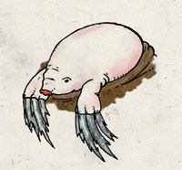
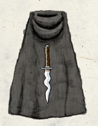
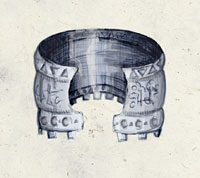
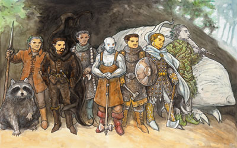

侏儒神系 Gnome Pantheon
侏儒众神居住在金色丘陵，由加尔�B闪金领导。
【强大神力 Greater Power】

加尔�B闪金 Garl Glittergold （侏儒众神之长）
别称：小丑 The Joker，机警保护者 the Watchful Protector，智慧火花the Sparkling Wit
圣徽：
居住界域：金色丘陵（侏儒国度） The Golden Hills
阵营：守序善良 LG
神职：保护 Protection，幽默感 humor，捉弄 trickery，切割宝石 gem cutting，侏儒 gnomes
信徒：冒险者，吟游诗人，守卫士兵，宝石工匠，侏儒，幻术师，珠宝商，矿工，盗贼，铁匠
牧师阵营：守序善良 LG，中立善良 NG，守序中立 LN
神域：工艺 Craft，侏儒 Gnome，善良 Good，守序 Law，保护 Protection，诡术 Trickery
喜好武器：亚伦迪那 Arumdina（战斧 battleaxe）
【中等神力 Intermediate Power】

拔尔泛�B野游者 Baervan Wildwanderer （侏儒的森林与旅行之神）
别称：假面之叶 The Masked Leaf
圣徽：浣熊的脸
居住界域：金色丘陵（侏儒国度） The Golden Hills
阵营：中立善良 NG
神职：旅行 Travel，自然 Nature，森侏儒 Forest Gnome
信徒：德鲁伊，森侏儒，游侠，岩侏儒，魔术师
牧师阵营：守序善良 LG，中立善良 NG，混乱善良 CG
神域：动物 Animal，侏儒 Gnome，善良 Good，植物 Plant，旅行 Travel
喜好武器：低语之叶 Whisperleaf（半身矛 halfspear）
科拉德伦�B滑手 Callarduran Smoothhands （深侏儒守护神）
别称：地底兄弟 Deep Brother，岩石大师 Master of Stone，地底之王 Lord of Deepearth
圣徽：有太阳徽志的金戒指
居住界域：金色丘陵（侏儒国度） The Golden Hills
阵营：绝对中立 N
神职：岩石 Stone，幽暗地域 the Underdark，挖掘 mining，深侏儒 the svirfneblin
信徒：战士，宝石工匠，隐士，珠宝商，幻术师，仇视黑暗精灵者
牧师阵营：善良中立 NG，守序中立 LN，绝对中立 N，混乱中立 CN，邪恶中立 NE
神域：洞穴 Craven，工艺 Craft，土 Earth，侏儒 Gnome
喜好武器：蜘蛛克星 Spiderbane（战斧 battleaxe）

弗兰多�B钢皮 Flandal Steelskin （侏儒的锻造之神）
别称：金属大师 Master of Metal，伟大的铁匠 the Great Steelsmith
圣徽：燃烧的铁锤
居住界域：金色丘陵（侏儒国度） The Golden Hills
阵营：中立善良 NG
神职：挖掘 mining，肉体的健康 physical fitness，打铁 smithing，金属工艺 metalworking
信徒：工匠，战士，侏儒，矿工，铁匠
牧师阵营：守序善良 LG，中立善良 NG，混乱善良 CG
神域：工艺 Craft，侏儒 Gnome，善良 Good，金属 Metal
喜好武器：隆汀 Rhongang（战锤 warhammer）

沙苟祯�B大地唤者 Segojan Earthcaller （侏儒的死亡与自然之神）
别称：大地之友 Earthfriend，地穴之王 Lord of the Burrow
圣徽：闪亮的宝石
居住界域：金色丘陵（侏儒国度） The Golden Hills
阵营：中立善良 NG
神职：大地 Earth，自然 Nature，死者 the Dead
信徒：德鲁伊，土裔，战士，侏儒，幻术师，商人，矿工
牧师阵营：守序善良 LG，中立善良 NG，混乱善良 CG
神域：洞穴 Craven，土 Earth，侏儒 Gnome，善良 Good
喜好武器：大地唤者 Earthcaller（重型钉头锤 heavy mace）
（YY：卡挖伊！）
乌尔德连 Urdlen （侏儒的叛逆与邪恶之神）
别称：地底爬行者 The Crawler Below
圣徽：苍白的鼹鼠
居住界域：金色丘陵（侏儒国度） The Golden Hills
阵营：混乱邪恶 CE
神职：贪婪 greed，血腥之欲 bloodlust，邪恶 evil，憎恨 hatred，叛逆 uncontrolled，冲动 impulse，叛逆青年 spriggans
信徒：刺客，暗黑卫士，侏儒，盗贼，叛逆青年
牧师阵营：混乱中立 CN，邪恶中立 NE，混乱邪恶 CE
神域：混乱 Chaos，土 Earth，邪恶 Evil，侏儒 Gnome，憎恨 Hatred
喜好武器：巨爪 Great Claw（附爪的护腕 claw bracer）
【微弱神力 Lesser Power】

巴瑞凡�B影披风 Baravar Cloakshadow （侏儒的间谍之神）
别称：狡诈者 The Sly One，幻象大师 Master of Illusion，易容之王 Lord in Disguise
圣徽：斗篷与匕首
居住界域：金色丘陵（侏儒国度） The Golden Hills
阵营：中立善良 NG
神职：幻象 illusion，诈欺 deception，陷阱 traps，监视 wards
信徒：冒险者，诈欺者，侏儒，幻术师，盗贼，扒手
牧师阵营：守序善良 LG，中立善良 NG，混乱善良 CG
神域：侏儒 Gnome，善良 Good，幻象 Illusion，保护 Protection，诡术 Trickery
喜好武器：梦餍 Nightmare（匕首 dagger）

盖瑞铎�B铁手 Gaerdal Ironhand （侏儒的战神）
别称：坚定者 The Stern，金色丘陵之盾 Shield of the Golden Hills
圣徽：铁制腰带
居住界域：金色丘陵（侏儒国度） The Golden Hills
阵营：守序善良 LG
神职：警惕 Vigilance，战斗 combat，军事防卫 martial defense
信徒：行政官，战士，法官，武僧，圣武士，士兵
牧师阵营：守序善良 LG，中立善良 NG，守序中立 LN
神域：侏儒 Gnome，善良 Good，守序 Law，保护 Protection，战争 War
喜好武器：锤之歌 Hammersong（战锤 warhammer）
侏儒众神群像

由左至右为 森林之神 拔尔泛�B野游者 [中等神力]
间谍之神 巴瑞凡�B影披风 [弱等神力]
深侏儒守护神 科拉德伦�B滑手 [中等神力]
锻造之神 弗兰多�B钢皮 [中等神力]
战神 盖瑞铎�B铁手 [弱等神力]
主神 加尔�B闪金 [强大神力]
死亡之神 沙苟祯�B大地唤者 [中等神力]
叛逆邪恶之神 乌尔德连 [中等神力]